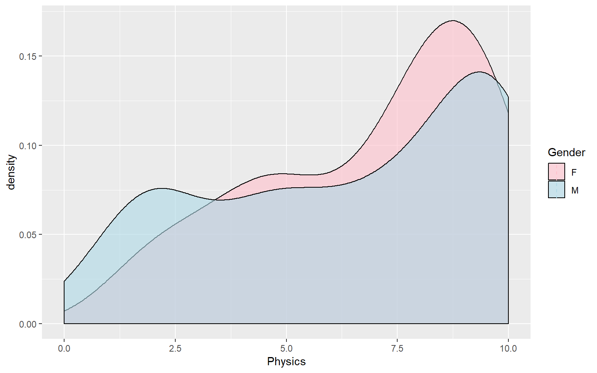

Análisis de datos para predictor académico UA
Facundo Rivas y Brian Biale
14/5/2019
Introducción
Obtención de los datos
Para la realización de este reporte fueron proporcionados tres archivos .xlsx, los cuales contienen ingresantes de los años 2018 y 2019 de la facultad de ingenierÃa de la Universidad Austral. Estos datos pasaron primeramente por una etapa de “Data Curation” o “Curación de Datos”, para mejorar su calidad. A continuación se muestra una preview de como quedaron ordenados los datos con sus respectivas variables:
| Name | Gender | Cohort | Entry | Math | R.Math | Physics | R.Physics | Entry Average | HS Average | School | Year |
|---|---|---|---|---|---|---|---|---|---|---|---|
| Estay Herreros Losio | M | 2018 | Ingreso Febrero | 4 | NA | 3 | 4 | 4 | NA | Sworn | 2018 |
| Pantaleone Marin Tomas | M | 2018 | Cuatrimestral | 7 | NA | 7 | NA | 7 | NA | San Jose | 2018 |
| Braian Mateo Sol | M | 2018 | Ingreso Febrero | 4 | NA | 6 | NA | 5 | NA | San Jose | 2018 |
| Berton Mato Juan | M | 2018 | Ingreso Febrero | 4 | NA | 4 | NA | 4 | NA | Santa Soledad Torres Acosta | 2018 |
| Luciana Lautaro Felix | F | 2018 | Ingreso Directo | NA | NA | NA | NA | NaN | NA | Northlands | 2018 |
| Santiago Federico Rico | M | 2018 | Pase Universitario | NA | NA | NA | NA | NaN | NA | Bede´s Grammar School | 2018 |
| Ivan Benjamín Marcos | M | 2018 | Ingreso Febrero | 10 | NA | 9 | NA | 10 | NA | Cardenal Pironio | 2018 |
| Emiliani Tomás Ivan | M | 2018 | Ingreso Febrero | 6 | NA | 9 | NA | 8 | NA | Lord Byron School (Peru) | 2018 |
| Fabrizio Gonzalez Martinez | M | 2018 | Ingreso Directo | NA | NA | NA | NA | NaN | NA | Los Molinos | 2018 |
| Maximiliano Abalo Alejandro | M | 2018 | Pase Universitario | NA | NA | NA | NA | NaN | NA | Colegio Peruano Britanico (Peru) | 2018 |
Análisis
Calidad de los datos
Como se puede ver hay 12 variables que caracterizan a cada uno de los elementos pertenecientes al conjunto de datos. Luego del proceso de “Data Curation”, hay muchas observaciones de las variables que no estan completas. Esto se debe a que, o bien fueron añadidas dichas variables al conjunto original de datos, o bien a que los datos fueron proporcionados ya de esta manera, lo cual afecta a la calidad que tiene la variable. En la siguiente tabla se muestran las variables con sus respectivas calidades (Cantidad de NA en cada variable, sobre el total de elementos que conforman el conjunto de datos):
| Porcentaje | |
|---|---|
| Name | 100 |
| Gender | 100 |
| Cohort | 100 |
| Entry | 100 |
| Math | 82 |
| R.Math | 17 |
| Physics | 81 |
| R.Physics | 9 |
| Entry Average | 84 |
| HS Average | 23 |
| School | 100 |
| Year | 100 |
Análisis variable a variable
Una vez curados los datos, se hace un análisis “variable a variable” para extraer información de las mismas.
Género de los ingresantes


Como puede notarse en los gráficos que el porcentaje de mujeres con respecto al de varones es mayor en el año 2019 que en el 2018.
Tipos de ingreso

El eje horizontal del gráfico representa la cantidad de ingresantes y el eje vertical contiene los distintos tipos de ingresos. Se puede ver que una gran mayorÃa de las personas eligen el curso de ingreso de febrero para entrar a la universidad.
Colegios de procedencia

El eje vertical del gráfico representa la cantidad de ingresantes que proporciona cada colegio y el eje horizontal contiene los nombres de los colegios. “Los Molinos”, el colegio que más aportó ingresantes es de la misma zona que la Universidad Austral.
Notas del examen de Matemática
Se analizan el promedio de todas las notas y el porcentaje de ingresantes que aprobaron el examen en primer instancia, en los años 2018 y 2019.
2018:
| Promedio | Aprobados |
|---|---|
| 6 | 63 % |
2019:
| Promedio | Aprobados |
|---|---|
| 6 | 59 % |
El promedio de nota de los exámenes se mantuvo igual pero el porcentaje de aprobados del año 2019 es menor.
Notas del examen de FÃsica
Se analizan el promedio de todas las notas y el porcentaje de ingresantes que aprobaron el examen en primer instancia, en los años 2018 y 2019.
2018:
| Promedio | Aprobados |
|---|---|
| 8 | 92 % |
2019:
| Promedio | Aprobados |
|---|---|
| 7 | 74 % |
El promedio de nota de los exámenes bajó y al igual que el porcentaje de aprobados.
Se puede notar que en ambas materias el porcentaje de aprobados del año 2019 es menor que el de 2018
Promedio de ingreso
Se analizan los datos de promedio de ingreso observando el porcentaje de ingresantes que obtuvo una puntuación mayor a 7.


Observese que el porcentaje de ingresantes que obtuvieron un promedio mayor a 7 en 2019 es más de un 10% menor que en 2018.
Promedio de secundaria
Analizamos los datos de promedio de secundaria y obtenemos un top 5.
| Name | HS Average |
|---|---|
| Lucas Susnisky Joaquin | 9.60 |
| Delfina Arias Tomas | 9.45 |
| Katia Maximiliano Matias | 9.41 |
| Fernandez Pedro Olivera | 9.34 |
| Santiago Pianetti Martinez | 9.20 |
La primer columna representando el nombre y la segunda representando el promedio de secundaria.
Recuperatorios
Para las columnas de recuperatorios (Matemática y FÃsica) se analizaron los datos obteniendo un porcentaje de ingresantes que tuvieron que rendir recuperatorio para cada año.


Los porcentajes para ambos años son muy similares.
Interpretación
Luego de analizar los datos variable a variable, se hace una interpretación de dichos análisis cruzando datos con el fin de obtener más información de las conclusiones a las que se llega.
Media de los promedios de ingreso segun género
2018:
| Gender | Mean |
|---|---|
| Varones | 7.01 |
| Mujeres | 7.41 |
Las mujeres obtuvieron un promedio de ingreso 0.40 puntos mayor al de los varones.
2019:
| Gender | Mean |
|---|---|
| Varones | 6.46 |
| Mujeres | 6.55 |
Las mujeres obtuvieron un promedio de ingreso 0.09 puntos mayor al de los varones.
La diferencia de promedios de ingreso entre varones y mujeres fue mas baja en el último año.